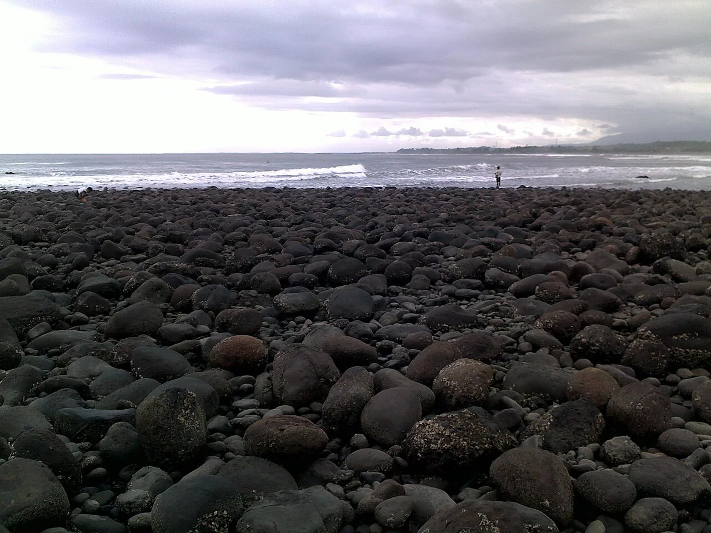

Medewi Point
Bali, Indonésie · surf

Un point de surf sur la côte ouest de Bali. Indonesia Travel le présente comme un spot de niveau intermédiaire.
- Lieu
- Bali, Indonésie
- Niveau
- Intermédiaire
- Activités
- surf
- Type d'eau
- Mer / océan
- Coordonnées
- -8.42, 114.80 (position approximative du secteur)
Ouvrir dans Ocean Buddy Télécharger sur l'App Store
Source : Indonesia Travel.